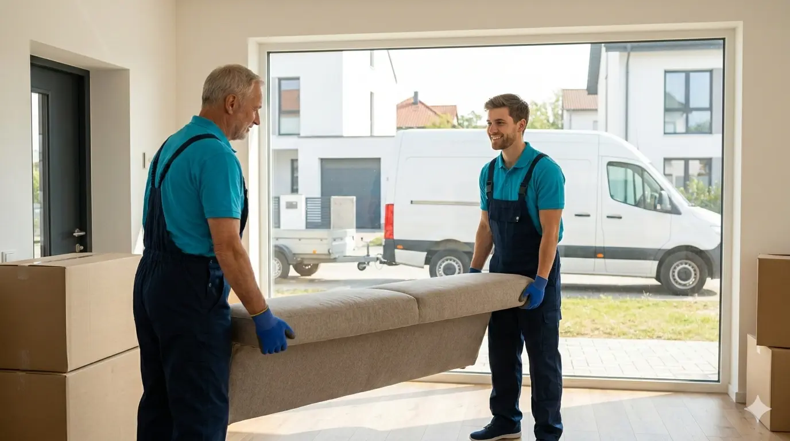

Entrümpelung
Schnell, sauber und zuverlässig – von einzelnen Räumen bis zur kompletten Beräumung.
Wir übernehmen Entrümpelungen, Haushalts- und Wohnungsauflösungen sowie Sperrmüll- und Elektroschrottentsorgung – schnell, sauber und zuverlässig. Für Transporte und größere Aufgaben sind wir mit Kombi & Anhänger flexibel unterwegs.

Wählen Sie die passende Entrümpelung – wir erstellen ein individuelles, transparentes Angebot.
Schnell, sauber und zuverlässig – von einzelnen Räumen bis zur kompletten Beräumung.

Diskret & termintreu: sortieren, räumen, abtransportieren – auf Wunsch inkl. Übergabe.

Komplette Wohnungsauflösung inkl. Tragearbeiten und sauberer Übergabe.
Von der ersten Anfrage bis zum sauberen Ergebnis – transparent und unkompliziert.
Sie nehmen Kontakt auf – per Telefon, WhatsApp oder Formular. Wir beraten Sie kostenlos und unverbindlich.
Vor-Ort-Besichtigung oder bei kleineren Anfragen reichen Fotos. So erfassen wir den Umfang genau.
Sie erhalten ein faires, transparentes Festpreis-Angebot – ohne versteckte Kosten.
Wir starten die gewünschte Dienstleistung zum vereinbarten Termin – schnell, sauber, zuverlässig.
Professionelle Mittel, moderne Methoden und viel Erfahrung – für private und gewerbliche Kunden.
Beschreiben Sie kurz Ihr Objekt (z. B. Fläche, Häufigkeit, besondere Anforderungen). Wir melden uns zeitnah zurück.
Region: München & Umgebung · Termine nach Vereinbarung
Wischen Sie nach links, um weitere Fragen zu sehen.
Die Kosten liegen erfahrungsgemäß bei ca. 15–25 € pro Kubikmeter, abhängig von Zugang, Stockwerk und Entsorgungsart. Wir erstellen Ihnen nach Besichtigung oder Fotoeinschätzung ein transparentes Festpreis-Angebot – ohne Überraschungen.
Grundsätzlich sind die Erben verantwortlich. Nach §580 BGB haben Angehörige ein Sonderkündigungsrecht und in der Regel 3 Monate Zeit für die Räumung. Wir helfen diskret und zeitnah, damit keine Fristen verstreichen.
Elektroschrott, Bauschutt, Farben, Lacke, Öle und Chemikalien gehören nicht in den Sperrmüll. Diese Stoffe müssen bei der Kommune oder auf dem Wertstoffhof separat abgegeben werden. Wir übernehmen die fachgerechte Trennung und Entsorgung für Sie.
Oft sind kurzfristige Termine innerhalb weniger Tage möglich. Bei dringendem Bedarf – z. B. bei Mietvertragsende oder Todesfall – setzen wir alles daran, zeitnah zu starten. Rufen Sie an oder schreiben Sie uns per WhatsApp.
Nein, das ist nicht zwingend nötig. Viele Kunden hinterlegen einen Schlüssel oder vereinbaren den Zugang mit der Hausverwaltung. Wir arbeiten vertrauensvoll und dokumentieren alles auf Wunsch mit Fotos.
Ja, je weniger entsorgt werden muss, desto günstiger wird es. Tipp: Gut erhaltene Möbel und Hausrat können Sie vorab an Sozialkaufhäuser oder über Kleinanzeigen abgeben. Wir beraten Sie gerne, was sich lohnt.
Verwertbare Gegenstände werden nach Absprache aussortiert – für Spende, Verkauf oder Mitnahme. Wir entsorgen nicht blind, sondern sprechen vorher mit Ihnen ab, was behalten oder gespendet werden soll.
Ja, wir entrümpeln Wohnungen, Keller, Dachböden, Garagen, Gartenhäuser und Gewerberäume. Auch bei engen Treppenhäusern und Altbauten ohne Aufzug – Tragearbeiten sind bei uns inklusive.
Elektrogeräte dürfen laut ElektroG nicht im Hausmüll entsorgt werden. Wir holen Ihre alten Elektrogeräte ab und entsorgen sie fachgerecht. Tipp: Batterien und Leuchtmittel vorher entnehmen – diese müssen separat entsorgt werden.